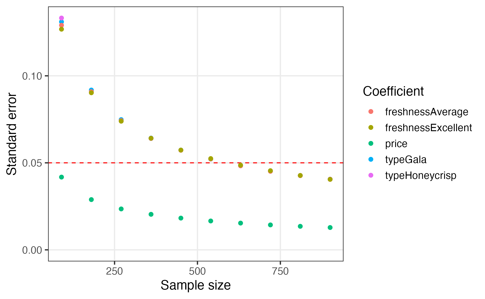

This package provides functions for designing surveys and conducting
power analyses for choice-based conjoint survey experiments in R. Each
function in the package begins with cbc_ and supports a
step in the following process for designing and analyzing surveys:

This guide walks through each step of this design process.
Generate profiles
All profiles
The first step in designing an experiment is to define the attributes
and levels for your experiment and then generate all of the
profiles of each possible combination of those attributes
and levels. For example, let’s say you’re designing a conjoint
experiment about apples and you want to include price,
type, and freshness as attributes. You can
obtain all of the possible profiles for these attributes using the
cbc_profiles() function:
library(cbcTools)
profiles <- cbc_profiles(
price = seq(1, 5, 0.5), # $ per pound
type = c('Fuji', 'Gala', 'Honeycrisp'),
freshness = c('Poor', 'Average', 'Excellent')
)
nrow(profiles)
#> [1] 81
head(profiles)
#> profileID price type freshness
#> 1 1 1.0 Fuji Poor
#> 2 2 1.5 Fuji Poor
#> 3 3 2.0 Fuji Poor
#> 4 4 2.5 Fuji Poor
#> 5 5 3.0 Fuji Poor
#> 6 6 3.5 Fuji Poor
tail(profiles)
#> profileID price type freshness
#> 76 76 2.5 Honeycrisp Excellent
#> 77 77 3.0 Honeycrisp Excellent
#> 78 78 3.5 Honeycrisp Excellent
#> 79 79 4.0 Honeycrisp Excellent
#> 80 80 4.5 Honeycrisp Excellent
#> 81 81 5.0 Honeycrisp ExcellentRestricted profiles
Depending on the context of your survey, you may wish to eliminate some profiles before designing your conjoint survey (e.g., some profile combinations may be illogical or unrealistic).
CAUTION: including restrictions in your designs can substantially reduce the statistical power of your design, so use them cautiously and avoid them if possible.
If you do wish to restrict some attribute level combinations, you can
do so using the cbc_restrict() function, which takes the
full set of profiles along with any number of restricted
pairs of attribute levels, defined as pairs of logical expressions
separated by commas. In the example below, I include the following
restrictions (these are arbitrary and just for illustration
purposes):
-
"Gala"apples will not be shown with the prices1.5,2.5, and3.5. -
"Honeycrisp"apples will not be shown with prices less than2. -
"Fuji"apples will not be shown with the"Excellent"freshness.
With these restrictions, there are now only 57 profiles compared to 81 without them:
restricted_profiles <- cbc_restrict(
profiles,
type == "Gala" & price %in% c(1.5, 2.5, 3.5),
type == "Honeycrisp" & price < 2,
type == "Fuji" & freshness == "Excellent"
)
dim(restricted_profiles)
#> [1] 57 4Generate survey designs
Once a set of profiles is obtained, a conjoint survey can then be
generated using the cbc_design() function. The function
takes several arguments that are common to all design methods:
-
profiles: A data frame of profiles (generated withcbc_profiles()) to use in the design (with or without restrictions). -
n_resp: The number of respondents in the survey. -
n_alts: The number of alternatives per question. -
n_q: The number of questions per respondent. -
method: The design strategy to use (defaults to"random").
The method argument determines the design strategy to
use: "random", "full",
"orthogonal", "dopt", "CEA", or
"Modfed". All methods ensure that the two following
criteria are met:
- No two profiles are the same within any one choice set.
- No two choice sets are the same within any one respondent.
The table below summarizes method compatibility with other design options, including the ability to include a “no choice” option, the creation of a “labeled” design (also called a “alternative-specific” design), the use of restricted profiles, and the use of blocking.
| Method | No choice | Labeled designs | Restricted profiles | Blocking |
|---|---|---|---|---|
"random" |
Yes | Yes | Yes | No |
"full" |
Yes | Yes | Yes | Yes |
"orthogonal" |
Yes | No | No | Yes |
"dopt" |
Yes | No | Yes | Yes |
"CEA" |
Yes | No | No | Yes |
"Modfed" |
Yes | No | Yes | Yes |
The returned design data frame contains a choice-based
conjoint survey design where each row is an alternative. It includes the
following columns:
-
profileID: Identifies the profile inprofiles. -
respID: Identifies each survey respondent. -
qID: Identifies the choice question answered by the respondent. -
altID:Identifies the alternative in any one choice observation. -
obsID: Identifies each unique choice observation across all respondents. -
blockID: If blocking is used, identifies each unique block.
Random designs
The "random" method (the default) creates a design where
choice sets are created by randomly sampling from the full set of
profiles with replacement. This means that few (if
any) respondents will see the same sets of choice sets. This method is
less efficient than other approaches and may lead to a deficient
experiment in smaller sample sizes, though it guarantees equal ability
to estimate main and interaction effects.
set.seed(5678)
design_random <- cbc_design(
profiles = profiles,
n_resp = 900, # Number of respondents
n_alts = 3, # Number of alternatives per question
n_q = 6, # Number of questions per respondent
method = 'random' # This is the default method
)
dim(design_random)
#> [1] 16200 8
head(design_random)
#> profileID respID qID altID obsID price type freshness
#> 1 44 1 1 1 1 4.5 Gala Average
#> 2 61 1 1 2 1 4.0 Fuji Excellent
#> 3 58 1 1 3 1 2.5 Fuji Excellent
#> 4 29 1 2 1 2 1.5 Fuji Average
#> 5 21 1 2 2 2 2.0 Honeycrisp Poor
#> 6 44 1 2 3 2 4.5 Gala AverageFull factorial designs
The "full" method for (“full factorial”) creates a
design where choice sets are created by randomly sampling from the full
set of profiles without replacement. The choice
sets are then repeated to meet the desired number of survey respondents
(determined by n_resp). If blocking is used, choice set
blocks are created using mutually exclusive subsets of
profiles within each block. This method produces a design
with similar performance with that of the "random" method,
except the choice sets are repeated and thus there will be many more
opportunities for different respondents to see the same choice sets. For
more information about blocking with full factorial designs, see
?DoE.base::fac.design as well as the JSS article on the
{DoE.base} package (Grömping 2018).
design_full <- cbc_design(
profiles = profiles,
n_resp = 900, # Number of respondents
n_alts = 3, # Number of alternatives per question
n_q = 6, # Number of questions per respondent
method = 'full'
)
dim(design_full)
#> [1] 16200 8
head(design_full)
#> profileID respID qID altID obsID price type freshness
#> 1 70 1 1 1 1 4.0 Gala Excellent
#> 2 28 1 1 2 1 1.0 Fuji Average
#> 3 1 1 1 3 1 1.0 Fuji Poor
#> 4 3 1 2 1 2 2.0 Fuji Poor
#> 5 47 1 2 2 2 1.5 Honeycrisp Average
#> 6 60 1 2 3 2 3.5 Fuji ExcellentOrthogonal designs
The "orthogonal" method creates a design where an
orthogonal array from the full set of profiles is found and
then choice sets are created by randomly sampling from this orthogonal
array without replacement. The choice sets are then repeated to
meet the desired number of survey respondents (determined by
n_resp). If blocking is used, choice set blocks are created
using mutually exclusive subsets of the orthogonal array within each
block. For cases where an orthogonal array cannot be found, a full
factorial design is used. This approach is also sometimes called a “main
effects” design since orthogonal arrays focus the information on the
main effects at the expense of information about interaction effects.
For more information about orthogonal designs, see
?DoE.base::oa.design as well as the JSS article on the
{DoE.base} package (Grömping 2018).
design_orthogonal <- cbc_design(
profiles = profiles,
n_resp = 900, # Number of respondents
n_alts = 3, # Number of alternatives per question
n_q = 6, # Number of questions per respondent
method = 'orthogonal'
)
#> Orthogonal array found; using 27 out of 81 profiles for design
dim(design_orthogonal)
#> [1] 16200 8
head(design_orthogonal)
#> profileID respID qID altID obsID price type freshness
#> 1 73 1 1 1 1 1.0 Honeycrisp Excellent
#> 2 22 1 1 2 1 2.5 Honeycrisp Poor
#> 3 38 1 1 3 1 1.5 Gala Average
#> 4 2 1 2 1 2 1.5 Fuji Poor
#> 5 1 1 2 2 2 1.0 Fuji Poor
#> 6 68 1 2 3 2 3.0 Gala ExcellentD-optimal designs
The "dopt" method creates a “D-optimal” design where an
array from profiles is found that maximizes the
D-efficiency of a linear model using the Federov algorithm, with the
total number of unique choice sets determined by
n_q*n_blocks. The optimization is handled using the {AlgDesign}
package. Choice sets are then created by randomly sampling from this
array without replacement. The choice sets are then repeated to
meet the desired number of survey respondents (determined by
n_resp). If blocking is used, choice set blocks are created
from the D-optimal array. For more information about the underlying
algorithm for this method, see ?AlgDesign::optFederov (Wheeler 2022).
design_dopt <- cbc_design(
profiles = profiles,
n_resp = 900, # Number of respondents
n_alts = 3, # Number of alternatives per question
n_q = 6, # Number of questions per respondent
method = 'dopt'
)
#> D-optimal design found with D-efficiency of 0.6
dim(design_dopt)
#> [1] 16200 8
head(design_dopt)
#> profileID respID qID altID obsID price type freshness
#> 1 10 1 1 1 1 1 Gala Poor
#> 2 27 1 1 2 1 5 Honeycrisp Poor
#> 3 36 1 1 3 1 5 Fuji Average
#> 4 36 1 2 1 2 5 Fuji Average
#> 5 46 1 2 2 2 1 Honeycrisp Average
#> 6 27 1 2 3 2 5 Honeycrisp PoorBayesian D-efficient designs
The "CEA" and "Modfed" methods use the
specified priors to create a Bayesian D-efficient design
for the choice sets, with the total number of unique choice sets
determined by n_q*n_blocks. The choice sets are then
repeated to meet the desired number of survey respondents (determined by
n_resp). These designs are optimized to minimize the
D-error of the design given a prior model, which is handled using the {idefix} package.
For now, designs are limited to multinomial logit priors (the {idefix}
package can generate designs with mixed logit priors). These designs
also currently do not support the ability to specify interaction terms
in the prior model or use “labeled” designs. If "CEA" or
"Modfed" is used without specifying priors, a
prior of all 0s will be used and a warning message stating
this will be shown. In the opposite case, if priors are
specified but neither Bayesian method is used, the "CEA"
method will be used and a warning stating this will be shown. Restricted
sets of profiles can only be used with
"Modfed". For more details on Bayesian D-efficient designs,
see ?idefix::CEA and ?idefix::Modfed as well
as the JSS article on the {idefix} package (Traets, Sanchez, and Vandebroek 2020).
In the example below, the prior model assumes the following parameters:
- 1 continuous parameter for
price - 2 categorical parameters for
type('Gala'and'Honeycrisp') - 2 categorical parameters for
freshness("Average"and"Excellent")
design_bayesian <- cbc_design(
profiles = profiles,
n_resp = 900, # Number of respondents
n_alts = 3, # Number of alternatives per question
n_q = 6, # Number of questions per respondent
priors = list(
price = -0.1,
type = c(0.1, 0.2),
freshness = c(0.1, 0.2)
),
method = 'CEA'
)
dim(design_bayesian)
#> [1] 16200 9
head(design_bayesian)
#> profileID respID qID altID obsID blockID price type freshness
#> 1 5 1 1 1 1 1 3.0 Fuji Poor
#> 2 76 1 1 2 1 1 2.5 Honeycrisp Excellent
#> 3 17 1 1 3 1 1 4.5 Gala Poor
#> 4 78 1 2 1 2 1 3.5 Honeycrisp Excellent
#> 5 32 1 2 2 2 1 3.0 Fuji Average
#> 6 14 1 2 3 2 1 3.0 Gala PoorLabeled designs (a.k.a. “alternative-specific” designs)
A “labeled” design (also known as “alternative-specific” design) is
one where the levels of one attribute are used as a label. This can be
created by setting the label argument to that attribute. As
of now, only "random" and "full" methods
support labeled designs. Since this by definition sets the number of
alternatives in each question to the number of levels in the chosen
attribute, the n_alts argument is overridden. Here is an
example of a labeled random design using the type attribute
as the label:
design_random_labeled <- cbc_design(
profiles = profiles,
n_resp = 900, # Number of respondents
n_alts = 3, # Number of alternatives per question
n_q = 6, # Number of questions per respondent
label = "type" # Set the "type" attribute as the label
)
dim(design_random_labeled)
#> [1] 16200 8
head(design_random_labeled)
#> profileID respID qID altID obsID price type freshness
#> 1 4 1 1 1 1 2.5 Fuji Poor
#> 2 64 1 1 2 1 1.0 Gala Excellent
#> 3 22 1 1 3 1 2.5 Honeycrisp Poor
#> 4 4 1 2 1 2 2.5 Fuji Poor
#> 5 15 1 2 2 2 3.5 Gala Poor
#> 6 49 1 2 3 2 2.5 Honeycrisp AverageIn the above example, the type attribute is now fixed to
be the same order for every choice question, ensuring that each level in
the type attribute will always be shown in each choice
question.
Designs with a “no choice” option (a.k.a. an “outside good”)
A “no choice” (also known as an “outside good”) option can be
included by setting no_choice = TRUE. If included, all
categorical attributes will be dummy-coded to appropriately dummy-code
the “no choice” alternative. All design methods can have a “no choice”
added.
design_nochoice <- cbc_design(
profiles = profiles,
n_resp = 900, # Number of respondents
n_alts = 3, # Number of alternatives per question
n_q = 6, # Number of questions per respondent
no_choice = TRUE
)
dim(design_nochoice)
#> [1] 21600 13
head(design_nochoice)
#> profileID respID qID altID obsID price type_Fuji type_Gala type_Honeycrisp
#> 1 47 1 1 1 1 1.5 0 0 1
#> 2 48 1 1 2 1 2.0 0 0 1
#> 3 9 1 1 3 1 5.0 1 0 0
#> 4 0 1 1 4 1 0.0 0 0 0
#> 5 54 1 2 1 2 5.0 0 0 1
#> 6 7 1 2 2 2 4.0 1 0 0
#> freshness_Poor freshness_Average freshness_Excellent no_choice
#> 1 0 1 0 0
#> 2 0 1 0 0
#> 3 1 0 0 0
#> 4 0 0 0 1
#> 5 0 1 0 0
#> 6 1 0 0 0For Bayesian D-efficient designs that include a “no choice” option, a
prior for the “no choice” option must also be provided using
prior_no_choice:
design_bayesian_no_choice <- cbc_design(
profiles = profiles,
n_resp = 900, # Number of respondents
n_alts = 3, # Number of alternatives per question
n_q = 6, # Number of questions per respondent
no_choice = TRUE,
priors = list(
price = -0.1,
type = c(0.1, 0.2),
freshness = c(0.1, 0.2)
),
prior_no_choice = -0.1,
method = 'CEA'
)
dim(design_bayesian_no_choice)
#> [1] 21600 14
head(design_bayesian_no_choice)
#> profileID respID qID altID obsID blockID price type_Gala type_Honeycrisp
#> 1 19 1 1 1 1 1 1 0 1
#> 2 19 1 1 2 1 1 1 0 1
#> 3 28 1 1 3 1 1 1 0 0
#> 4 0 1 1 4 1 1 0 0 0
#> 5 46 1 2 1 2 1 1 0 1
#> 6 46 1 2 2 2 1 1 0 1
#> type_NA freshness_Average freshness_Excellent freshness_NA no_choice
#> 1 0 0 0 0 0
#> 2 0 0 0 0 0
#> 3 0 1 0 0 0
#> 4 0 0 0 0 1
#> 5 0 1 0 0 0
#> 6 0 1 0 0 0Inspect survey designs
The package includes some functions to quickly inspect some basic metrics of a design.
The cbc_balance() function prints out a summary of the
individual and pairwise counts of each level of each attribute across
all choice questions:
design <- cbc_design(
profiles = profiles,
n_resp = 900,
n_alts = 3,
n_q = 6
)
cbc_balance(design)
#> =====================================
#> Individual attribute level counts
#>
#> price:
#>
#> 1 1.5 2 2.5 3 3.5 4 4.5 5
#> 1838 1762 1884 1813 1792 1812 1732 1803 1764
#>
#> type:
#>
#> Fuji Gala Honeycrisp
#> 5446 5422 5332
#>
#> freshness:
#>
#> Poor Average Excellent
#> 5355 5458 5387
#>
#> =====================================
#> Pairwise attribute level counts
#>
#> price x type:
#>
#> Fuji Gala Honeycrisp
#> NA 5446 5422 5332
#> 1 1838 629 593 616
#> 1.5 1762 596 597 569
#> 2 1884 622 625 637
#> 2.5 1813 583 600 630
#> 3 1792 616 605 571
#> 3.5 1812 610 618 584
#> 4 1732 604 584 544
#> 4.5 1803 591 576 636
#> 5 1764 595 624 545
#>
#> price x freshness:
#>
#> Poor Average Excellent
#> NA 5355 5458 5387
#> 1 1838 633 620 585
#> 1.5 1762 561 604 597
#> 2 1884 629 606 649
#> 2.5 1813 558 640 615
#> 3 1792 605 596 591
#> 3.5 1812 611 596 605
#> 4 1732 587 573 572
#> 4.5 1803 609 605 589
#> 5 1764 562 618 584
#>
#> type x freshness:
#>
#> Poor Average Excellent
#> NA 5355 5458 5387
#> Fuji 5446 1837 1797 1812
#> Gala 5422 1766 1820 1836
#> Honeycrisp 5332 1752 1841 1739The cbc_overlap() function prints out a summary of the
amount of “overlap” across attributes within the choice questions. For
example, for each attribute, the count under "1" is the
number of choice questions in which the same level was shown across all
alternatives for that attribute (because there was only one level
shown). Likewise, the count under "2" is the number of
choice questions in which only two unique levels of that attribute were
shown, and so on:
cbc_overlap(design)
#> ==============================
#> Counts of attribute overlap:
#> (# of questions with N unique levels)
#>
#> price:
#>
#> 1 2 3
#> 46 1433 3921
#>
#> type:
#>
#> 1 2 3
#> 558 3612 1230
#>
#> freshness:
#>
#> 1 2 3
#> 578 3524 1298Simulate choices
Choices for a given design can be simulated using the
cbc_choices() function. This function requires a
design argument (a design generated by
cbc_design()), and an obsID argument, which is
the column in design that identifies each unique choice
observation. By default, random choices are simulated:
data <- cbc_choices(
design = design,
obsID = "obsID"
)
head(data)
#> profileID respID qID altID obsID price type freshness choice
#> 1 73 1 1 1 1 1.0 Honeycrisp Excellent 0
#> 2 65 1 1 2 1 1.5 Gala Excellent 0
#> 3 10 1 1 3 1 1.0 Gala Poor 1
#> 4 34 1 2 1 2 4.0 Fuji Average 0
#> 5 79 1 2 2 2 4.0 Honeycrisp Excellent 0
#> 6 33 1 2 3 2 3.5 Fuji Average 1Choices can also be simulated according to an assumed prior model.
For this option, choices are simulated using the
predict.logitr() method from the {logitr} package (Helveston 2023), which makes predictions
according to multinomial or mixed logit models.
The example below demonstrates how to simulate choices according to a
multinomial logit model with fixed parameters. Note that for categorical
variables (type and freshness in this
example), the first level defined when using cbc_profiles()
is set as the reference level. In this example, the parameters define
the following utility model for each alternative j:
\[ u_{j} = -0.1 p_j + 0.1 t^\mathrm{Gala}_j + 0.2 t^\mathrm{Honeycrisp}_j + 0.1 f^\mathrm{Average}_j + 0.2 f^\mathrm{Excellent}_j + \varepsilon_{j} \]
where \(p\) is price, \(t\) is type, and \(f\) is freshness.
data <- cbc_choices(
design = design,
obsID = "obsID",
priors = list(
price = -0.1,
type = c(0.1, 0.2),
freshness = c(0.1, 0.2)
)
)The prior model used to simulate choices can also include interaction
effects. For example, the example below is the same as the previous
example but with an added interaction between price and
type:
data <- cbc_choices(
design = design,
obsID = "obsID",
priors = list(
price = -0.1,
type = c(0.1, 0.2),
freshness = c(0.1, 0.2),
`price*type` = c(0.1, 0.5)
)
)Finally, to simulate choices according to a mixed logit model where
parameters follow a normal or log-normal distribution across the
population, the randN() and randLN() functions
can be used inside the priors list. The example below
models the type attribute with two random normal parameters
using a vector of means (mean) and standard deviations
(sd) for each level of type:
Assess power
The simulated choice data can be used to conduct a power analysis by estimating a model multiple times with incrementally increasing sample sizes. As the sample size increases, the estimated coefficient standard errors will decrease, enabling the experimenter to identify the sample size required to achieve a desired level of precision.
The cbc_power() function achieves this by partitioning
the choice data into multiple sizes (defined by the nbreaks
argument) and then estimating a user-defined choice model on each data
subset. Model parameters are defined as a vector of attribute names that
refer to column names in the data object. All models are
estimated using the {logitr}
package, and any additional arguments for estimating models with the
package can be passed through the cbc_power() function. For
example, to assess power for a mixed logit model, the
randPars argument can be used. For more information, see
?logitr::logitr as well as the JSS article on the {logitr}
package (Helveston 2023).
In the example below, the simulated choice data is broken into 10
chunks with increasing sample sizes and a multinomial logit model is
estimated on each chunk with parameters for price,
type, and freshness.
power <- cbc_power(
data = data,
pars = c("price", "type", "freshness"),
outcome = "choice",
obsID = "obsID",
nbreaks = 10,
n_q = 6
)
head(power)
#> sampleSize coef est se
#> 1 90 price 0.039316159 0.04180211
#> 2 90 typeGala -0.074792614 0.13102947
#> 3 90 typeHoneycrisp 0.249773359 0.13321212
#> 4 90 freshnessAverage -0.293822461 0.12905576
#> 5 90 freshnessExcellent -0.249666465 0.12678919
#> 6 180 price 0.004215383 0.02887776
tail(power)
#> sampleSize coef est se
#> 45 810 freshnessExcellent -0.04270355 0.04275524
#> 46 900 price -0.01341887 0.01283066
#> 47 900 typeGala 0.03440936 0.04059641
#> 48 900 typeHoneycrisp 0.03300050 0.04061671
#> 49 900 freshnessAverage -0.07456685 0.04049070
#> 50 900 freshnessExcellent -0.03041637 0.04052333The returned data frame contains the coefficient estimates and
standard errors for each chunk of the data. In the example above, it is
clear that the standard errors for a sample size of 900 are much lower
than those for a sample size of just 90. This approach can be used to
more precisely identify sample size requirements by increasing
nbreaks.
Visualizing the results of the power analysis can be particularly
helpful for identifying sample size requirements. Since the
cbc_power() function returns a data frame in a “tidy” (or
“long”) format (Wickham 2014), the results
can be conveniently plotted using the popular {ggplot2} package (Wickham, Chang, and Wickham 2016). A
plot.cbc_errors() method is included in {cbcTools} to
create a simple ggplot of the power curves.
plot(power)Researchers may be interested in aspects other than standard errors.
By setting return_models = TRUE, the
cbc_power() function will return a list of estimated models
(one for each data chunk), which can then be used to examine other model
objects. The example below prints a summary of the last model in the
list of returned models from a power analysis.
models <- cbc_power(
data = data,
pars = c("price", "type", "freshness"),
outcome = "choice",
obsID = "obsID",
nbreaks = 10,
n_q = 6,
return_models = TRUE
)
summary(models[[10]])
#> =================================================
#>
#> Model estimated on: Thu Jul 13 09:53:08 2023
#>
#> Using logitr version: 1.1.0
#>
#> Call:
#> FUN(data = X[[i]], outcome = ..1, obsID = ..2, pars = ..3, randPars = ..4,
#> panelID = ..5, clusterID = ..6, robust = ..7, predict = ..8)
#>
#> Frequencies of alternatives:
#> 1 2 3
#> 0.32556 0.33778 0.33667
#>
#> Exit Status: 3, Optimization stopped because ftol_rel or ftol_abs was reached.
#>
#> Model Type: Multinomial Logit
#> Model Space: Preference
#> Model Run: 1 of 1
#> Iterations: 8
#> Elapsed Time: 0h:0m:0.02s
#> Algorithm: NLOPT_LD_LBFGS
#> Weights Used?: FALSE
#> Robust? FALSE
#>
#> Model Coefficients:
#> Estimate Std. Error z-value Pr(>|z|)
#> price -0.013419 0.012831 -1.0458 0.29563
#> typeGala 0.034409 0.040596 0.8476 0.39666
#> typeHoneycrisp 0.033001 0.040617 0.8125 0.41651
#> freshnessAverage -0.074567 0.040491 -1.8416 0.06554 .
#> freshnessExcellent -0.030416 0.040523 -0.7506 0.45290
#> ---
#> Signif. codes: 0 '***' 0.001 '**' 0.01 '*' 0.05 '.' 0.1 ' ' 1
#>
#> Log-Likelihood: -5.929770e+03
#> Null Log-Likelihood: -5.932506e+03
#> AIC: 1.186954e+04
#> BIC: 1.190251e+04
#> McFadden R2: 4.611921e-04
#> Adj McFadden R2: -3.816220e-04
#> Number of Observations: 5.400000e+03Pipe it all together!
One of the convenient features of how the package is written is that
the object generated in each step is used as the first argument to the
function for the next step. Thus, just like in the overall program
diagram, the functions can be piped together. For example, the
“pipeline” below uses the Base R pipe operator (|>) to
generate profiles, generate a design, simulate choices according to a
prior utility model, conduct a power analysis, and then finally plot the
results:
cbc_profiles(
price = seq(1, 4, 0.5), # $ per pound
type = c('Fuji', 'Gala', 'Honeycrisp'),
freshness = c('Poor', 'Average', 'Excellent')
) |>
cbc_design(
n_resp = 900, # Number of respondents
n_alts = 3, # Number of alternatives per question
n_q = 6 # Number of questions per respondent
) |>
cbc_choices(
obsID = "obsID",
priors = list(
price = -0.1,
type = c(0.1, 0.2),
freshness = c(0.1, 0.2)
)
) |>
cbc_power(
pars = c("price", "type", "freshness"),
outcome = "choice",
obsID = "obsID",
nbreaks = 10,
n_q = 6
) |>
plot()
Comparing multiple designs
When evaluating multiple designs, it can be helpful to visually
compare their respective power curves. This can be done using the
plot_compare_power() function. To use it, you have to first
create different designs and then simulate the power of each design by
simulating choices. Here is an example comparing a full factorial design
against a Bayesian D-efficient design:
# Make designs to compare: full factorial vs bayesian d-efficient
design_full <- cbc_design(
profiles = profiles,
n_resp = 300, n_alts = 3, n_q = 6
)
# Same priors will be used in bayesian design and simulated choices
priors <- list(
price = -0.1,
type = c(0.1, 0.2),
freshness = c(0.1, 0.2)
)
design_bayesian <- cbc_design(
profiles = profiles,
n_resp = 300, n_alts = 3, n_q = 6, n_start = 1, method = "CEA",
priors = priors, parallel = FALSE
)
# Obtain power for each design by simulating choices
power_full <- design_full |>
cbc_choices(obsID = "obsID", priors = priors) |>
cbc_power(
pars = c("price", "type", "freshness"),
outcome = "choice", obsID = "obsID", nbreaks = 10, n_q = 6, n_cores = 2
)
power_bayesian <- design_bayesian |>
cbc_choices(obsID = "obsID", priors = priors) |>
cbc_power(
pars = c("price", "type", "freshness"),
outcome = "choice", obsID = "obsID", nbreaks = 10, n_q = 6, n_cores = 2
)
# Compare power of each design
plot_compare_power(power_bayesian, power_full)